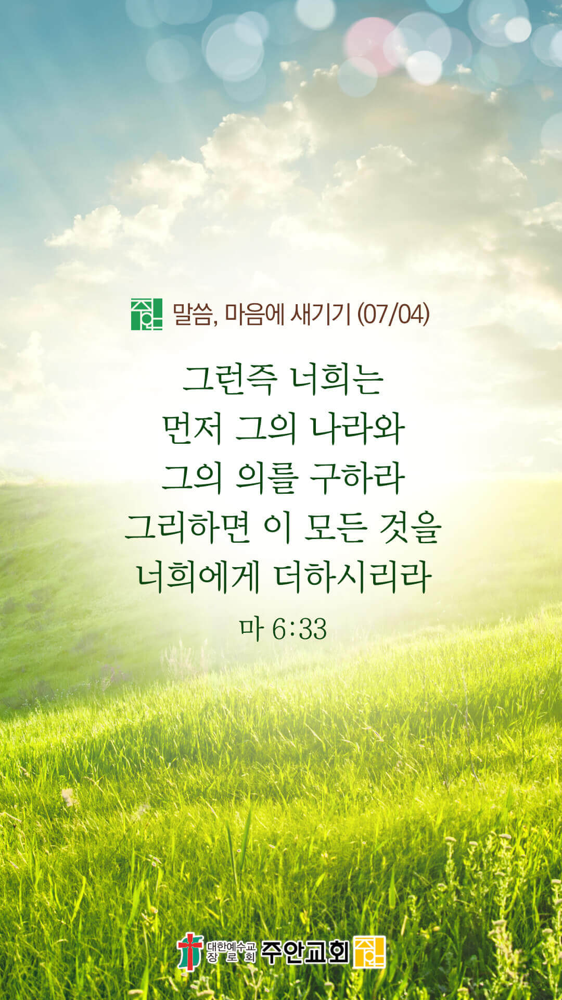

온라인 기도실 안내
2021년 07월04일(일)~07월 10일(토)
- 온라인 기도실은 온 회중이 함께 주님 앞으로 나아가는 자리입니다
- 30분 정도 여유를 가지고 하시기 바랍니다
- 말씀과 묵상, 찬양과 기도로 나아갑니다
- 배경 음악이 나올 수 있습니다 볼륨을 조절해주세요
준비가 되셨으면 아래의 버튼을 눌러주세요
할렐루야
내 영혼아 여호와를 찬양하라
시 146:1
- 가사를 묵상하며 읽습니다
아바 아버지 아바 아버지
나를 안으시고 바라보시는
아바 아버지
아바 아버지 아바 아버지
나를 도우시고 힘주시는
아버지
나의 사랑하는자의 목소리
듣기 원하네 나의 사랑
나의 어여쁜 자야
할렐루야
내 영혼아 여호와를 찬양하라
시 146:1
- 가사를 묵상하며 읽습니다
바위 틈 은밀한 곳에서
듣기 원하네 부드러운
주님의 음성
나의 사랑 나의 사랑
나의 어여쁜 자야
일어나 함께 가자
할렐루야
내 영혼아 여호와를 찬양하라
시 146:1
아바 아버지, 나의 사랑하는 자의 목소리
by 김윤진 간사
위의 찬양이 끝나면 말씀읽기를 눌러주시면 됩니다
주의 말씀은 내 발에 등이요
내 길에 빛이니이다 (시119:105)
오늘의 말씀입니다
음악 소리가 크면 조절하시기 바랍니다

마음의 묵상
마 6:33
“그런즉 너희는 먼저 그의 나라와 그의 의를 구하라 그리하면 이 모든 것을 너희에게 더하시리라”
1. 주님은 우리에게 무엇을 먼저 구하라고 말씀하셨나요?
2. 그리하면 우리에게 어떻게 해주시겠다고 약속하셨나요?
3. 당신의 우선순위는 어떻게 되나요?
주님은 항상 저의 최우선입니다
회개, 삶의 방향을 바꾸는 결정
회개하는 자에게 하나님의 마음이 향합니다
“만일 내가 말한 그 민족이 그의 악에서 돌이키면 내가 그에게 내리기로 생각하였던 재앙에 대하여 뜻을 돌이키겠고”
- 예레미야 18:8 -
3분 정도 회개하며 주님 앞에 나아갑니다
사슴이 시냇물을 찾기에 갈급함 같이
시42:1
- 다음의 말씀을 소리 내어 읽습니다
[빌립보서 4장 12-13절]
12 나는 비천에 처할 줄도 알고 풍부에 처할 줄도 알아 모든 일 곧 배부름과 배고픔과 풍부와 궁핍에도 처할 줄 아는 일체의 비결을 배웠노라
13 내게 능력 주시는 자 안에서 내가 모든 것을 할 수 있느니라
하나님 나라
1. 하나님의 나라가 속히 이 땅에 임하게 하소서
하나님 아버지,
인도발 델타 변이 바이러스의 확산이 그치게 하시고, 백신이 전 세계에 안정적으로 보급이 되게 하소서.
전 세계에서 일어나고 있는 인권탄압, 내전, 분쟁, 무력 충돌이 그치게 하시고, 평화가 임하게 하소서.
고난의 시기에도 복음은 계속해서 전파되게 하시고, 선교의 새로운 문이 열리게 하소서.
간절한 마음으로 3분 정도 기도합시다
남과 북
2. 남북한이 속히 복음으로 통일되게 하소서
하나님 아버지,
북한의 지하교회 성도들이 하나님을 마음껏, 자유롭게 예배할 수 있는 그 날이 속히 오게 하소서. 극심한 식량난의 고통을 겪고 있는 북한 주민들에게 필요한 식량과 지원이
전달될 수 있게 하시고, 그 땅에도 코로나19가 속히 종식되게 하소서.
간절한 마음으로 3분 정도 기도합시다
대한민국
3. 우리나라가 하나님을 경외하는 나라가 되게 하소서
하나님 아버지,
변이 바이러스 확산이 그치게 하시고, 백신 접종이 온 국민들에게 안정적으로 이루어지게 하소서. 국민들의 분열을 조장하는 갈등, 혐오, 집단 이기주의가
그쳐지게 하시고, 서로 간의 갈등을 부추기는 거짓의 영이 떠나가게 하소서. 서로를 평등하고 존귀하게 대하는 정상적인 인식이 우리 국민들에게 회복되게 하소서.
간절한 마음으로 3분 정도 기도합시다
한국교회
4. 한국교회가 성령으로 새롭게 부흥되게 하소서
하나님 아버지,
한국 교회의 성도들이 이웃들과 한국 사회에 친절하고 좋은 이웃이 되길 소망합니다. 한국 교회의 모든 성도들이 주님을 닮으며,
주님의 다시 오심을 고대하면서 주님의 손과 발이 되어, 이웃과 주변 사람들을 사랑하며 섬기며 친절을 베푸는 선교적 삶을 살아가게 하소서.
또한, 이들을 통하여 복음의 능력이 한국 사회에 넘쳐 흐르게 하소서.
간절한 마음으로 3분 정도 기도합시다
주안교회
5. 주안교회가 다음 세대를 세우는 선교적 교회가 되게 하소서
하나님 아버지,
은혜 받은 사람으로 당연히 해야 할 일을 했으나, 받은 바 은혜에 비하면 항상 부족하게 하였고,
더 충성했어야 할 것을 다하지 못했음을 고백합니다. 주안의 성도들이 무익한 종의 감사를 회복할 수 있도록 도우시고,
우리의 심령 깊은 곳에서부터 진정한 감사와 찬양의 고백이 넘쳐나게 하소서.
간절한 마음으로 3분 정도 기도합시다
감사의 기도
- 오늘 기도를 인도하신 주님께 감사를 올려드립니다
- 아래의 구절을 읽고 주님께 감사의 마음을 올려드립시다
“아침과 저녁마다 서서
여호와께 감사하고 찬송하며”
- 역대상 23장 30절 -
고요한 가운데 잠시 침묵하시기 바랍니다
파송, 세상을 향하여
- 오늘의 온라인 기도를 마쳤습니다
기도를 들으신 주님께서 평안히 가라 하십니다
주님께서 우리와 함께 하시니 두려울 것이 없습니다
새벽을 깨우며
- 새벽기도회 안내입니다